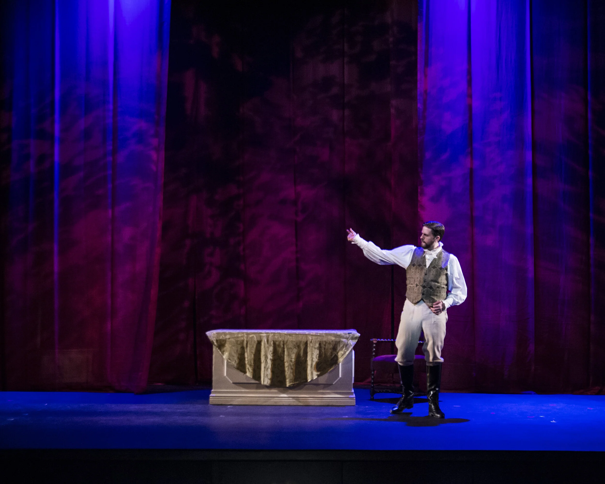

Musical theatre, opera, and concert. Recordings, credits, and materials for casting, all in one place.

| Doctor of Musical Arts | Opera and Voice Pedagogy | University of Maryland | 2016 |
| Master of Music | Voice | University of Oklahoma | 2013 |
| Bachelor of Music | Vocal Performance | Utah State University | 2010 |
| Bachelor of Music | Choral Music Education | Utah State University | 2011 |
| Angus Tuck upcoming | Tuck Everlasting | Sandy Arts | 2026 |
| Russian Soloist | Fiddler on the Roof | Centerpoint Theatre | 2026 |
| Harry Bright | Mamma Mia! | Riverside Productions | 2025 |
| Sir Harry | Once Upon a Mattress | Community Performance Series | 2022 |
| Friar Lawrence | Romeo and Juliet | OSU Bard in the Quad | 2021 |
| Andrew Carnes | Oklahoma! | Sundance Summer Theatre | 2019 |
| Chauvelin | The Scarlet Pimpernel | Cache Regional Theatre | 2010 |
| Franz | The Sound of Music | Utah Festival Opera & Musical Theatre | 2010 |
| Joseph Hewes | 1776 | Utah Festival Opera & Musical Theatre | 2008 |
| Officer Krupke | West Side Story | Utah Festival Opera & Musical Theatre | 2007 |
| Oscar Hubbard | Regina | Maryland Opera Studio | 2016 |
| Papageno | Die Zauberflöte | Maryland Opera Studio | 2016 |
| Don Giovanni | Don Giovanni | Maryland Opera Studio | 2015 |
| Ollie Jr. | A Family Reunion | Maryland Opera Studio | 2015 |
| Sharpless | Madama Butterfly | Charlottesville Opera | 2015 |
| Sharpless | Madama Butterfly | Castleton Festival | 2014 |
| Falstaff | Falstaff | University of Oklahoma | 2013 |
| Thoas | Iphigénie en Tauride | University of Oklahoma | 2013 |
| Seneca | L'incoronazione di Poppea | University of Oklahoma | 2011 |
| Papageno | Die Zauberflöte | Utah State University | 2011 |
| Sweeney Todd | Sweeney Todd | Utah State University | 2010 |
| Gianni Schicchi | Gianni Schicchi | Utah State University | 2010 |
| Rambaldo | La rondine | Utah State University | 2009 |
| Vidal Hernando | Luisa Fernanda | Utah State University | 2008 |
| Belcore | L'elisir d'amore | Utah State University | 2007 |
| Father / Peter | Hansel & Gretel | Utah State University | 2007 |
| Top | The Tender Land | Utah State University | 2006 |
| Haydn | The Creation | Corvallis Repertory Singers | 2019 |
| Brahms | Ein Deutsches Requiem | University of Maryland | 2015 |
| Fauré | Requiem | Grace Church, Alexandria | 2015 |
| Britten | War Requiem | The Baltimore Symphony | 2014 |
| Saint-Saëns | Christmas Oratorio | Silver Spring United Methodist | 2014 |
| Beethoven | Symphony No. 9 | University of Oklahoma | 2013 |
| Rutter | Mass of the Children / Gloria | Tulsa Oratorio Chorus | 2012 |
| Vaughan Williams | Hodie | Tulsa Oratorio Chorus | 2012 |
| Mendelssohn | Die erste Walpurgisnacht | University of Oklahoma | 2011 |
| Haydn | Nicolaimesse | University of Oklahoma | 2011 |
| Beethoven | Symphony No. 9 | Utah State University | 2009 |
| Stage Director | Zazà | The Crane Opera Ensemble | 2022 |
| Producer / Vocal Director | Once Upon a Mattress | Community Performance Series | 2022 |
| Stage Director | The Medium | The Crane Opera Ensemble | 2021 |
| Stage Director | Mahagonny Songspiel | The Crane Opera Ensemble | 2021 |
| Stage Director | L'elisir d'amore | Oregon State University | 2021 |
| Music Director | Romeo and Juliet | OSU Bard in the Quad | 2021 |
| Stage Director | The Secret Garden | Oregon State University | 2020 |
| Stage Director | La rondine | Oregon State University | 2019 |
| Stage Director | Mozartistry | Oregon State University | 2019 |
| Music Director | Shakespeare in Love | Oregon State University | 2019 |
| Music Director | Guys and Dolls | Providence Hall H.S. | 2017 |
| Stage Director | So Many Possibilities | Oregon State University | 2017 |
| Stage Director | Mozart Scenes Program | University of Oklahoma | 2011 |
Elizabeth Avery, Stephen Carey, David Hanlon, Miah Im, Lynn Jemison-Keisker, Benedicte Jourdois, Justina Lee, David Mayfield, Bradley Moore, Shelby Rhoades, Stephanie Rhodes, Lorne Richstone, Ben Salisbury
Colin Baldy, Deb Birnbaum, Marilyn Horne, Lauren Flanigan, Stephen King, Cynthia Lawrence, Stanford Olsen, Mark Padmore
Andy Anderson, Sergio Bernal, Barbara Day-Turner, Nathan Fifeld, Steven Jarvi, Craig Jessop, Karen Keltner, Craig Kier, Bradley Moore, Jonathan Shames, Tim Sharp, Richard Zielinski
Colin Baldy, Amanda Consol, Andrea Dorf-McGray, Kevin Doyle, William Ferrara, Rachel Harris, Daniel Helfgot, James Marvel, Dan Rigazzi, Michael Shell, Jack Shouse, Tomer Zvulun